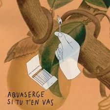
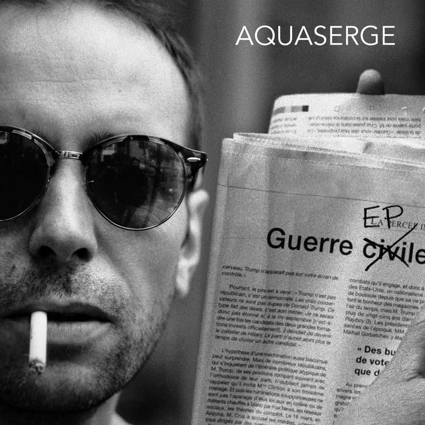
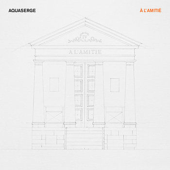
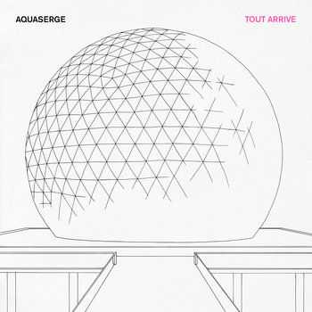
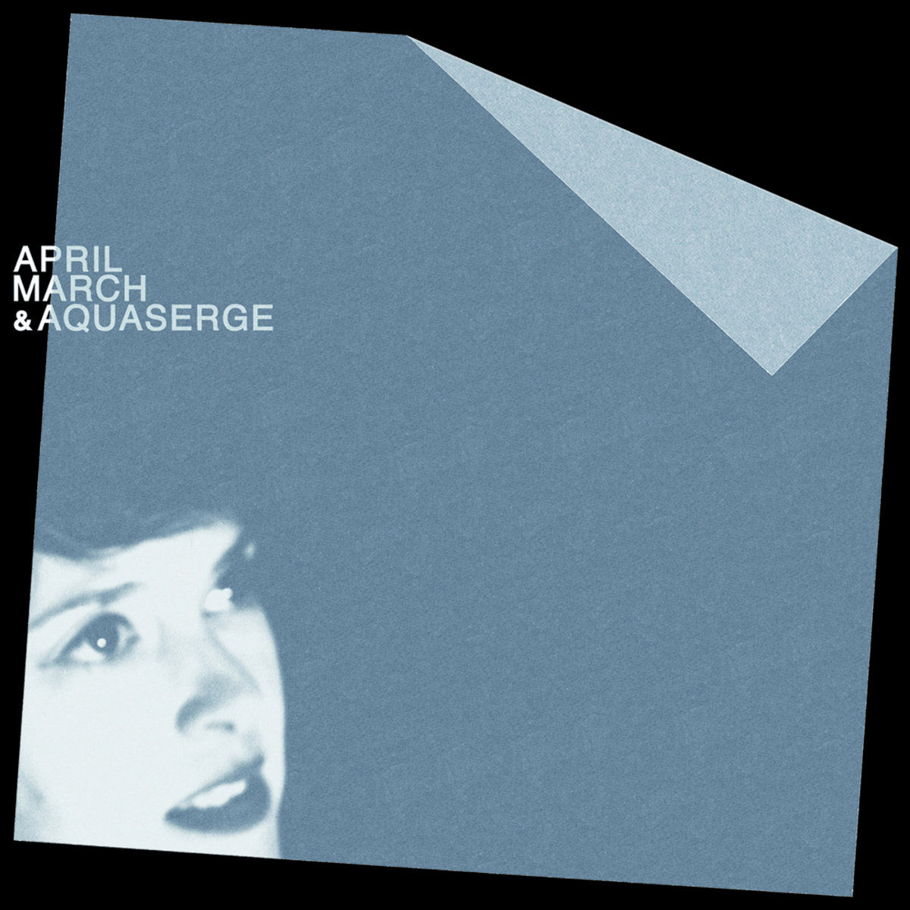
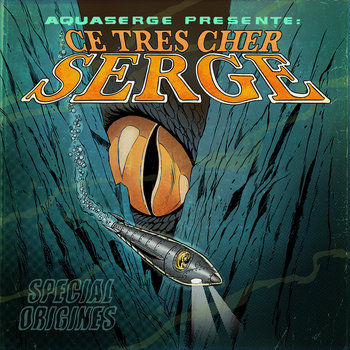
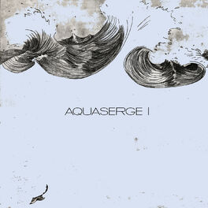

Catalogue
Discography
Albums, EP, collaborations et portes d'entrée vers les écoutes officielles.
 Aquaserge New Information Order
Aquaserge New Information Order
 La fin de l'économie
La fin de l'économie
 The Possibility of a New Work for Aquaserge
The Possibility of a New Work for Aquaserge
 Déjà vous ?
Déjà vous ?
 Laisse ça être
Laisse ça être

C'est extra
Guerre EP
À l'amitié
Tout arrive / TVCQJVD
April March & Aquaserge
Ce très cher Serge Un deux
Tahiti Coco